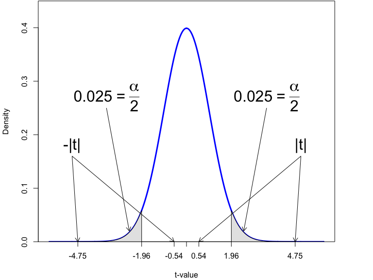

Based on Stock and Watson, ch. 5
The population regression model is
\[Y_i = \beta_0 + \beta_1 X_i + u_i; \quad i = 1,\ldots,n\]
\(\beta_0\) and \(\beta_1\) are population parameters; they are fixed (non-random), but unknown
The data \((Y_i,X_i; i=1,\ldots,n) \,\) is a random sample from the population of \(Y\) and \(X\)
Assume the Least Squares assumptions for causal inference are satisfied
Under the OLS assumptions for causal inference, in large samples, \(\hat{\beta}_1\) is approximately distributed according to the Normal distribution:
\[\hat{\beta}_1 \overset{\text{approx}}{\sim} \mathcal{N}\left(\beta_1,\sigma^2_{\hat{\beta}_1} \right)\]
\[H_0: \, \beta_1 = \beta_{1,0}; \quad H_1: \, \beta_1 \neq \beta_{1,0}\]
When the Least Squares assumptions for causal inference holds and \(H_0\) is true, then \(\hat{\beta}_1 \overset{\text{approx}}{\sim} \mathcal{N}(\beta_{1,0},\hat{\sigma}^2_{\hat{\beta}_1})\), and
\[t = \frac{\hat{\beta}_1-\beta_{1,0}}{\hat{\sigma}_{\hat{\beta}_1}} \overset{\text{approx}}{\sim} \mathcal{N}\left(0,1 \right)\]
where \(\hat{\sigma}_{\hat{\beta}_1}\) is a consistent (robust!) estimator of \(\sigma_{\hat{\beta}_1}\).
\(t\)-test of \(H_0\) with significance level \(\alpha =0.05\): reject \(H_0\) if \(|t| > 1.96\); otherwise, do not reject \(H_0\)

\[Score_i = \beta_0 + \beta_1 STR_i + u_i; \quad i = 1,\ldots,n\]
\[H_0: \, \beta_1 = 0; \quad H_1: \, \beta_1 \neq 0\]
# Regression of Score on STR using CASchools dataframe
lm1 <- lm(Score ~ STR, data = CASchools) # Fitted model in lm1
# Regression output with heteroskedastic robust SEs
parameters(lm1, robust = TRUE, vcov_type = "HC1")## Parameter | Coefficient | SE | 95% CI | t(418) | p
## ----------------------------------------------------------------------
## (Intercept) | 698.93 | 10.36 | [678.56, 719.31] | 67.44 | < .001
## STR | -2.28 | 0.52 | [ -3.30, -1.26] | -4.39 | < .001Thought experiment: test all possible hypothesized values for \(\beta_1\) with 5% significance level, record rejections and non-rejections
Given \(\hat{\beta}_1\) and \(\hat{\sigma}_{\hat{\beta}_1}\), which hypothesized values \(\beta_{1,0}\) for \(\beta_1\) are not rejected?
\[\left| \frac{\hat{\beta}_1-\beta_{1,0}}{\hat{\sigma}_{\hat{\beta}_1}} \right| < 1.96\]
The outlined test procedure implies that we fail to reject \(H_0: \beta_1 = \beta_{1,0}\) for \(\beta_{1,0}\) in the following interval:
\[\hat{\beta}_1-1.96 \times \hat{\sigma}_{\hat{\beta}_1} \leq \beta_{1,0} \leq \hat{\beta}_1+ 1.96\times \hat{\sigma}_{\hat{\beta}_1}\]
Estimate of range of \(\beta_1\)-values, called a 95%-confidence interval for \(\beta_1\) (abbreviated \(CI_{\beta_1,0.95}\)), all of which are consistent with the estimate \(\hat{\beta}_1\)
\[Score_i = \beta_0 + \beta_1 STR_i + u_i; \quad i = 1,\ldots,n\]
# Regression output with heteroskedastic robust SEs
parameters(lm1, robust = TRUE, vcov_type = "HC1")## Parameter | Coefficient | SE | 95% CI | t(418) | p
## ----------------------------------------------------------------------
## (Intercept) | 698.93 | 10.36 | [678.56, 719.31] | 67.44 | < .001
## STR | -2.28 | 0.52 | [ -3.30, -1.26] | -4.39 | < .001\[CI_{\beta_1,0.95} = \left[\hat{\beta}_1-1.96 \times \hat{\sigma}_{\hat{\beta}_1}, \hat{\beta}_1+ 1.96 \times \hat{\sigma}_{\hat{\beta}_1}\right]\]
Random sampling implies that the confidence interval limits are random variables
\(CI_{\beta_1,0.95}\) is the set of \(\beta_1\)-values that are not rejected by a two-sided \(t\)-test with a 5% significance level
\(CI_{\beta_1,0.95}\) is also a interval that has a 95% coverage probability of containing the true value \(\beta_1\)
A 95%-confidence interval is the range of \(\beta_1\)-values that are not rejected by a two-sided \(t\)-test with a 5% significance level
Provides an estimate of a range of values for \(\beta_1\) consistent with estimate \(\hat{\beta}_1\)
A 95%-confidence interval is a random interval with a 95% coverage probability: will cover the true value \(\beta_1\) in 95/100 random samples
Confidence intervals are routinely reported by regression software including in R